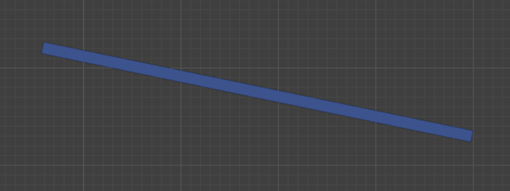
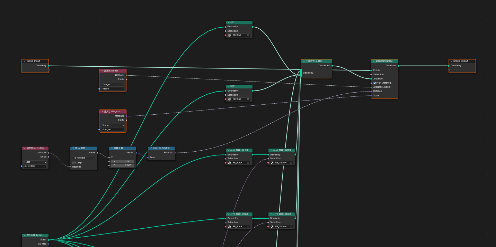

Blender 4.5 · Geometry Nodes
紅藍椅
用節點做出來
新手完整復刻教學：從空白新檔，一步一步做出整張紅藍椅。
這堂課怎麼跟
- 每頁只做一件事：跟著做 → 看結果 → 卡住時回頭查。
- 截圖是真的：Blender 4.5.5 的實際畫面（英文介面），點圖可開原圖。
- 單位用毫米：所有數字直接填構件表的值。
- 每章有驗收：通過了再往下。
章節
- GN00 準備環境
- GN01 傳統 vs GN：同一塊座板
- GN02 一個點放一個方塊
- GN03 用屬性控制尺寸與角度
- GN04 載入 17 件資料
- GN05 方塊款式與 Pick Instance
- GN06 整椅驗收
傳統一件一件做，節點用規則做
| 傳統建模 | Geometry Nodes | |
|---|---|---|
| 做一件 | Add → Cube，在 N 面板改尺寸、位置、角度 | 點上放單位方塊，尺寸位置角度由點的屬性決定 |
| 做 17 件 | 重複 17 次，或複製後逐件改 | 17 個點，一條規則 |
| 改尺寸 | 回到該件改；Scale 與 Apply 要分清楚 | 改資料表一格，全部重算 |
| 上色與端面 | 逐件指派材質；黃色端面要進 Edit Mode 選面指派 | 依款式 variant 一次選好：每款方塊先上好色，端面黃在方塊自己的面上 |
| 修改歷史 | 改了網格，只能靠 Undo | 非破壞性：節點可隨時調整、停用、重接 |
| 單件微調 | 進 Edit Mode 直接拉點 | 不能直接拉；要改資料或加節點，需要時才 Realize |
| 學習成本 | 低 | 要懂資料流（socket、屬性、domain），節點圖易亂 |
GN00
準備環境
把 Blender 設成毫米單位，讓之後每個欄位都能直接填構件表的數字。
驗收 尺寸顯示毫米；Unit Scale = 0.001；檔案已存。
GN01
傳統 vs Geometry Nodes：同一塊藍座板
用兩種方法做出同一塊座板 RB-16（360 × 450 × 12 mm、X 軸 −11.67°、中心 (0, 178.3, 275.2)），親眼比較差別。
驗收 兩塊座板的外廓、位置、傾角相同；說得出各自要改尺寸時該動哪裡。
右視圖對照：兩塊座板重疊


- View → Viewpoint → Right（或數字鍵盤 3），看 Right Orthographic。
- 先隱藏 Seat_GN 看傳統座板，再隱藏 Seat_Traditional 看 GN 座板（Outliner 的眼睛圖示，或游標在視圖按 H）。
- 兩者位置與傾角相同：座板往後（右側 +Y）下傾 11.67°。
差異提示兩種做法得到同一個結果；差別在於「怎麼改」：傳統改物件的欄位，GN 改節點的欄位。
GN02
一個點放一個方塊
用一個點和一個方塊，弄懂 Instance on Points：點在哪，實例就在哪。
驗收 點數從一變二，實例的中心剛好在點的位置。
GN03
用屬性控制尺寸與角度
讓每個點自己帶尺寸與角度：座板與背板各自長成正確的樣子。
驗收 座板與背板的尺寸、位置、傾角（−11.67°、−26.565°）都對。
GN04
載入 17 件資料
一次載入整張椅子 17 件的資料，看到椅子的形狀。
驗收 17 個點、屬性名稱正確、椅子的形狀出現（還沒有顏色）。
GN05
方塊款式與 Pick Instance
顏色和黃色端面，由每個點的 variant 一次決定，不必逐件上色。
驗收 17 個實例：紅背板、藍座板、黑框架、黃色端面位置正確。
一個 Instance on Points：Pick Instance


- Instance on Points：Points 接 Group Input，Instance 接 Geometry to Instance。
- 勾選 Pick Instance；Instance Index 接 Named Attribute（Integer）
variant。 - Rotation 接 Euler to Rotation，Scale 接 size_mm。
差異提示Pick Instance：每個點從 7 款裡挑一款。傳統做法是 17 個物件各自指派材質。
GN06
整椅驗收
確認做出來的椅子和原檔一致，並認識 Realize Instances。
驗收 外廓 660 × 823 × 863 mm；17 個實例；三視圖的外形正確。
做到哪裡、還沒做什麼
- GN00 到 GN06 已完成：截圖都是 Blender 4.5.5 的真實畫面。還沒做的是新手試走，與旁白的人工實聽。
- 新手試走：還沒找人從新檔依教學操作；在試走前，不能說新手可完整復刻整張紅藍椅。
- 截圖方式：腳本改好 Blender 狀態後擷取真實介面，不是滑鼠實錄；選單展開畫面只有 Units 面板。
- 選修：椅寬參數（GN08）還沒做。